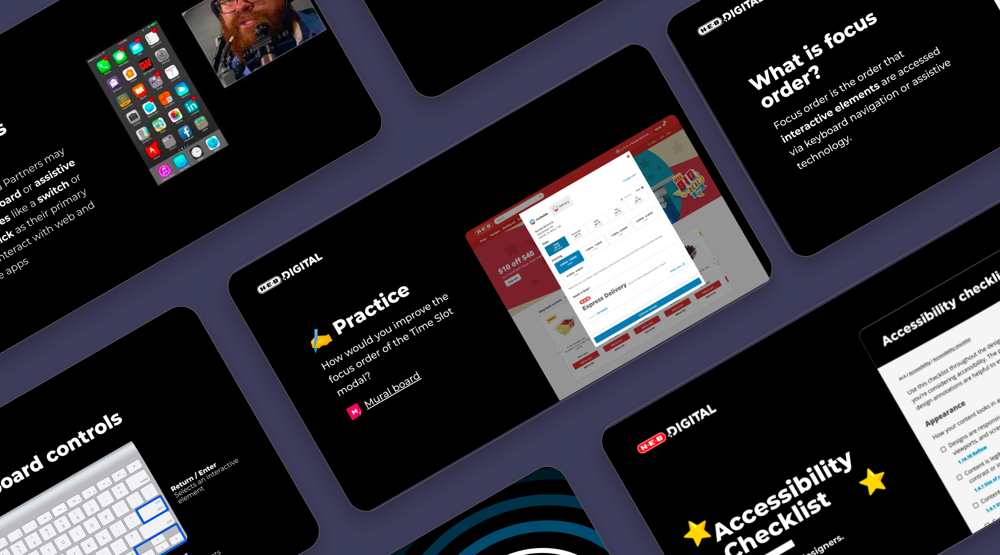
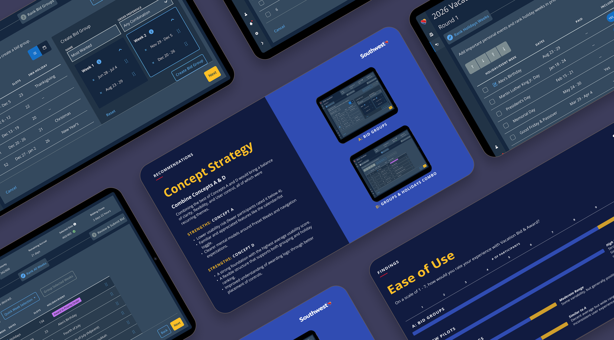

Starting H-E-B's Accessibility Program
Started H-E-B's digital accessibility program from scratch, creating systems and processes that ensured inclusive design for millions of users.
Read case studyLeading with empathy. Designing for impact.
For over 20 years, I’ve built systems that last and created accessible, inclusive digital experiences that make a difference.
View my workSelected projects that demonstrate my approach to building lasting digital experiences.

Started H-E-B's digital accessibility program from scratch, creating systems and processes that ensured inclusive design for millions of users.
Read case study
Solo designer supporting 5 products and 10 apps across crew operations. Building intake systems and scalable design processes.
Read case studyAdditional projects demonstrating my range and impact across industries.
Designed an internal app to get trucking invoices paid and resolve disputes. Created journey maps to understand complex workflows across drivers, dispatchers, and fleet managers.
Built a temporary web app with rich content and enticing offers that served as a proven model for entering new markets. We achieved over 35k new app downloads over a period of 4 weeks.
Educated product teams, prioritized accessibility issues, and recommended an accessibility strategy leading Figma to work toward building a more inclusive design platform.
Solved inventory issues during the COVID-19 lockdown by creating curated bundles of essential items, helping families get what they needed.
Untangled complex login errors and gave Veterans clear steps to resolve them.
Designed and ushered a Bluetooth-enabled injection tracker through the complex FDA-approval process.
The strengths that shape my design approach.
I don't just design products--I build the infrastructure that makes good design possible at scale. At HEB, I started the digital accessibility program from scratch. I know how to identify gaps, make the case for investment, and create systems that outlast any single project.
I spent 20+ years moving between highly technical stakeholders (pilots, flight attendants, engineers) and everyday users (grocery shoppers, families). I can take complex regulatory requirements or business constraints and turn them into intuitive experiences.
When you're the drummer in a band, you're the backbone. You set the tempo, you keep everyone together, and if you mess up, the whole song falls apart. I bring that same energy to design: I know when to lead, when to support, and how to keep a team in sync.
Trail running teaches you that the path is never straightforward. There are switchbacks, obstacles, and moments where you question why you're doing this. But you keep moving forward, adapt to the terrain, and celebrate when you reach the summit. That's my approach to complex design challenges.
Before I was a designer, I wanted to be a screenwriter (still do). That training taught me that everything is about the narrative: Why does this button matter? What's the user's emotional journey? I bring that storytelling lens to everything I do.
I've been the one in the room saying "but what about accessibility?" for my entire career. Good design doesn't just work for the happy path--it works for everyone, including the people who get forgotten. I genuinely care about inclusive design and supporting teams.
I'm currently exploring new opportunities. If you're looking for a designer who builds for the long run, let's talk.
Get in touch